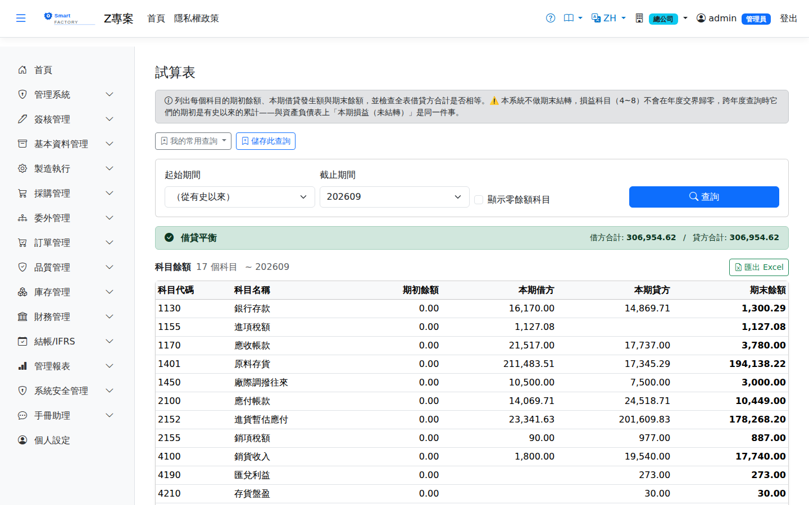

試算表Trial Balance
列出每個科目的期初餘額、本期借貸發生額與期末餘額，並在最上方直接告訴你全表借方合計是否等於貸方合計。它的位置在「管理日記帳」之後、「月結作業」之前，因為它就是關帳前的最後一道檢查。Lists the opening balance, period debits and credits, and closing balance of every account, and states at the top whether total debits equal total credits. It sits between "Management Journal" and "Month-end close" because that is what it is for: the last check before closing.

資料稽核診斷驗的是逐傳票借貸平衡——每一張傳票自己借貸相等。但「每張傳票都平衡」不等於「科目餘額是對的」：漏過帳、重複過帳、科目代碼打錯，這三種在逐傳票那一層全部看不見，因為每一張單獨看都合規。試算表看的是科目層級的結果，也是把分錄匯出到外部會計系統之前唯一能整表對一次的地方。The data audit checks per-voucher balance — each voucher debits equal credits. But "every voucher balances" is not "the account balances are right": a missed posting, a duplicated posting, or a mistyped account code are all invisible at that level, because each voucher on its own is valid. The trial balance looks at the account level, and it is the only place to reconcile the whole set before exporting the entries to an external accounting system.
查詢Search
怎麼看How to read it
綠色＝借貸合計相等，這段期間的分錄整體平衡。紅色＝不平衡，不要關帳，並會列出差額。正常入口產生不出單邊分錄，但資料修補、匯入或過帳中途中斷都可能留下這種殘骸，而這張表就是用來看見它的。Green means total debits equal total credits and the period balances as a whole. Red means the ledger is out of balance — do not close the period, and the amount it is out of balance by is shown. The normal entry paths cannot produce a one-sided entry, but data repairs, imports or a posting interrupted halfway can leave one behind, and this report is how you see it.
本系統刻意不做期末結轉：4xxx～8xxx 的損益科目不會在年度交界被歸零轉進保留盈餘。理由是帳務主體在外部會計系統，結轉屬於總帳的職責，這裡做了會與外部各出一套結轉分錄。所以跨年度查詢時，損益科目的期初是有史以來的累計。資產負債表上那張「本期損益（未結轉）」卡片表達的是同一件事。This system deliberately does not perform period-end closing: accounts 4xxx–8xxx are not reset into retained earnings at the year boundary. The books of record live in an external accounting system, and closing is the general ledger's job — doing it here as well would produce two competing sets of closing entries. So across years, the opening balance of a profit and loss account is the cumulative total since inception. The "Net Profit (Unclosed)" card on the balance sheet reports the same thing.
欄位說明Field reference
查詢條件Query criteria
| 條件Condition | 說明Guide |
|---|---|
| 起始期間From period | 留白＝從有史以來。此欄決定哪些分錄算「期初」、哪些算「本期」Blank means since inception. This field decides which entries count as "opening" and which as "this period" |
| 截止期間To period | 必選。期末餘額累計到這一期為止Required. Closing balances are accumulated up to and including this period |
| 顯示零餘額科目Show zero-balance accounts | 勾選後連期初與本期都是 0 的科目也列出來；核對完整科目表時才需要Also lists accounts with no opening balance and no movement; only needed when checking the full chart of accounts |
報表欄位Report fields
| 欄位Field | 說明Guide |
|---|---|
| 科目代碼 / 科目名稱Account / Name | 取自分錄上的科目。科目主檔查不到時仍會列出（歷史分錄的科目可能已被刪除），不會靜默消失Taken from the entries. Accounts missing from the master are still listed (a historical entry may reference a deleted account) rather than silently dropped |
| 期初餘額Opening | 起期之前的累計，已依科目性質定正負號——資產借餘為正、負債與收入貸餘為正Cumulative total before the start period, signed by account nature: assets are positive on the debit side, liabilities and revenue positive on the credit side |
| 本期借方 / 本期貸方Debit / Credit | 區間內的發生額原始值，不帶正負號慣例。這兩欄的合計必須相等Raw movement amounts within the range, without the sign convention. The totals of these two columns must be equal |
| 期末餘額Closing | 期初 ± 本期發生。每一列都滿足「期初 ＋ 本期借 − 本期貸 ＝ 期末」（貸方為正的科目反向）Opening ± movement. Every row satisfies "opening + debit − credit = closing" (reversed for credit-normal accounts) |
存成常用查詢Saving the query
查詢列上方有「我的常用查詢」與「儲存此查詢」。這張畫面吃的是會計期間，所以期間選項只有「本會計期間／上一會計期間」兩種——會計期間可以自訂起訖、與日曆月不同，存成「上個月」在自訂期間的廠別不會是你以為的那一期。用法見常用查詢。"My saved queries" and "Save this query" appear above the search bar. This screen works on accounting periods, so the only period options are "this accounting period" and "last accounting period" — accounting periods can have custom start and end dates, and "last month" would not be the period you meant at a plant using custom periods. See saved queries.
相關畫面Related screens
管理日記帳Management journal、月結作業Month-end close、資產負債表Balance sheet、資料稽核診斷Data audit diagnostics